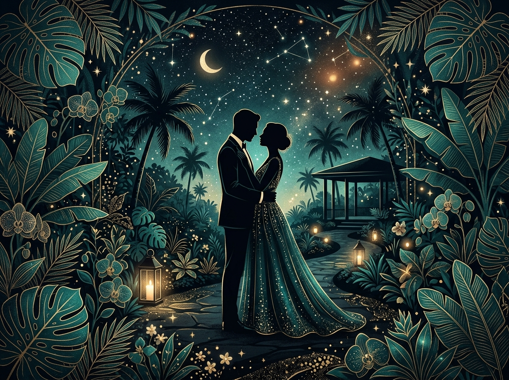
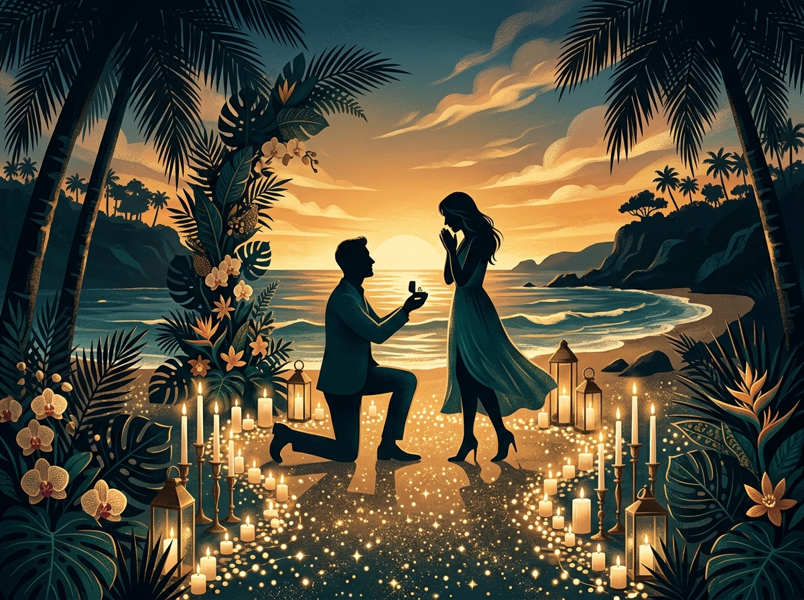

A Chronicle of Devotion
Our Journey

Chapter I
The Beginning
In the vibrant tapestry of London, two distinct paths aligned. Luke, hailing from the green pastures of the United Kingdom, met Titin, whose roots run deep in the rich heritage of Java, Indonesia. What began as a chance encounter blossomed into an intellectual and spiritual connection, transcending borders and languages. In the quiet moments of shared aspirations, they discovered a mutual understanding that would become the cornerstone of their future.
Chapter II
Two Cultures, One Heart
Their love story is a beautiful testament to the bridge between two worlds. Navigating the delicate nuances of British formality and Indonesian warmth, they found a harmonious balance. Celebrating each other's heritage, they created a unique shared language built on respect, laughter, and mutual admiration. From the historic streets of England to the emerald landscapes of Indonesia, their bond grew stronger with every journey, merging two distinct backgrounds into a single, unified path forward.

Chapter III
The Proposal
Against the breathtaking backdrop of a Balinese sunset, with the gentle rhythm of the Indian Ocean as witness, Luke asked Titin to embark on a lifelong journey together. Surrounded by the timeless beauty of the island, Titin answered with a resounding affirmation. The proposal marked not just a promise of marriage, but a solemn vow to cherish, support, and inspire one another for all the years to come.